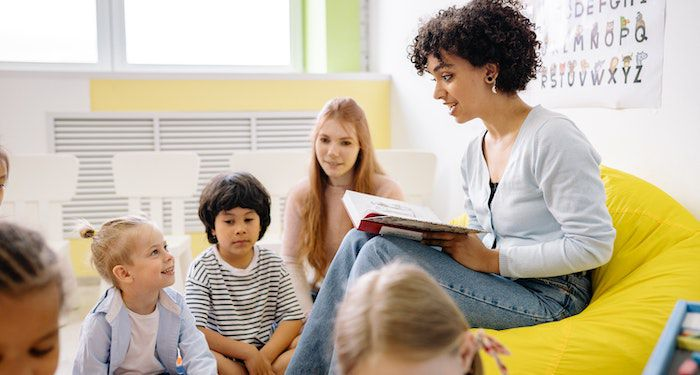

Girls Who Can Code Summer Immersion Program
Over the course of 2 weeks I learned how to create 3 different projects using HTML, CSS, and JavaScript. One project being this very site, the second being a personality quiz (older or younger sibling, and lastly a social justice project. For the Social justice project I chose to cover Mica and its impact on the child miners.
-------------------------------------------------------------------------------------------------
Kode with Klossy
TBD (Program not started Yet)
-------------------------------------------------------------------------------------------------

Volunteer Head Teacher: Python Tutoring (Whittman Elementary)
I worked to create lesson plans, slides, and engaging activities for my students while a volunteer Python teacher at Whittman Elementary. I taught students the basics of object oriented programing, conditionals, loops, and more. I was able to share the power of programing with younger students around me and encourage them to lear more about CS.
-------------------------------------------------------------------------------------------------

Child and Teen Read Aloud (Cerritos Library Volunteen)
As a Cerritos Library Volunteen, I worked with children of all ages. I was assigned to a group of kids at the same reading level, and worked to improve their reading skills. I would picks out books that interested them and help them sound out and define unknown words. Most importantly, I would ask comprehensive questions, to ensure the students were understanding the content. I was able to create growth in the child readers, and most importantly make reading something enjoyable.
------------------------------------------------------------------------------------------------